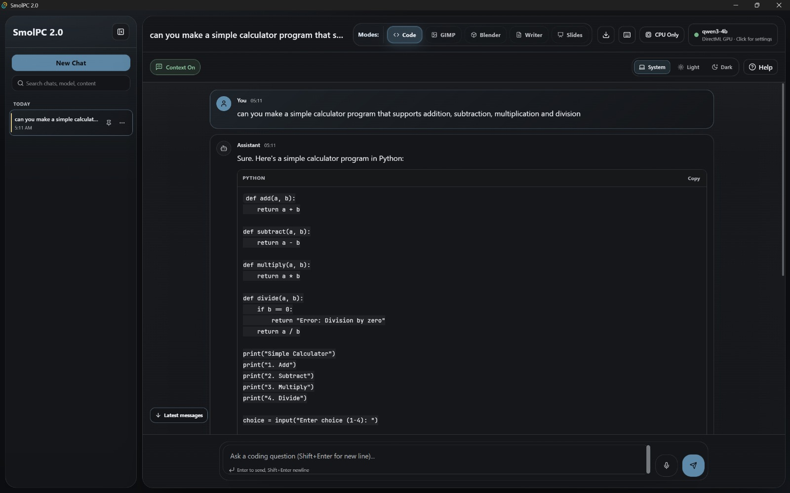
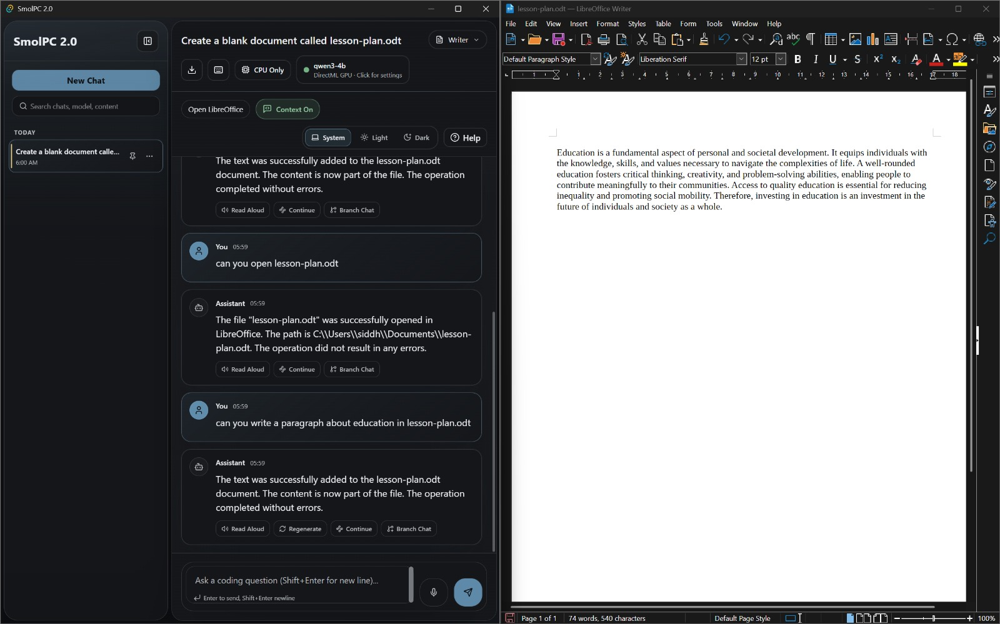
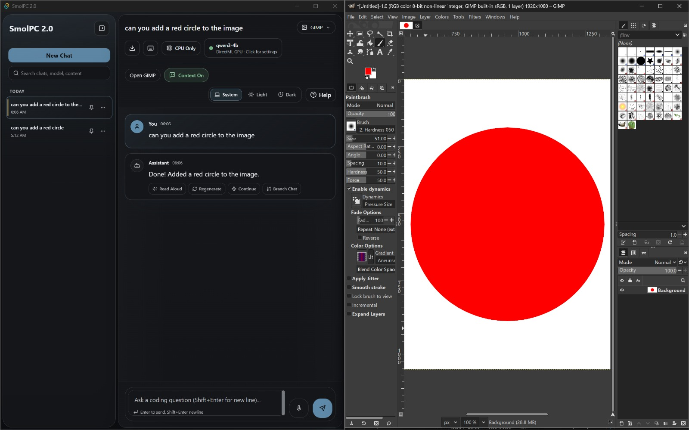
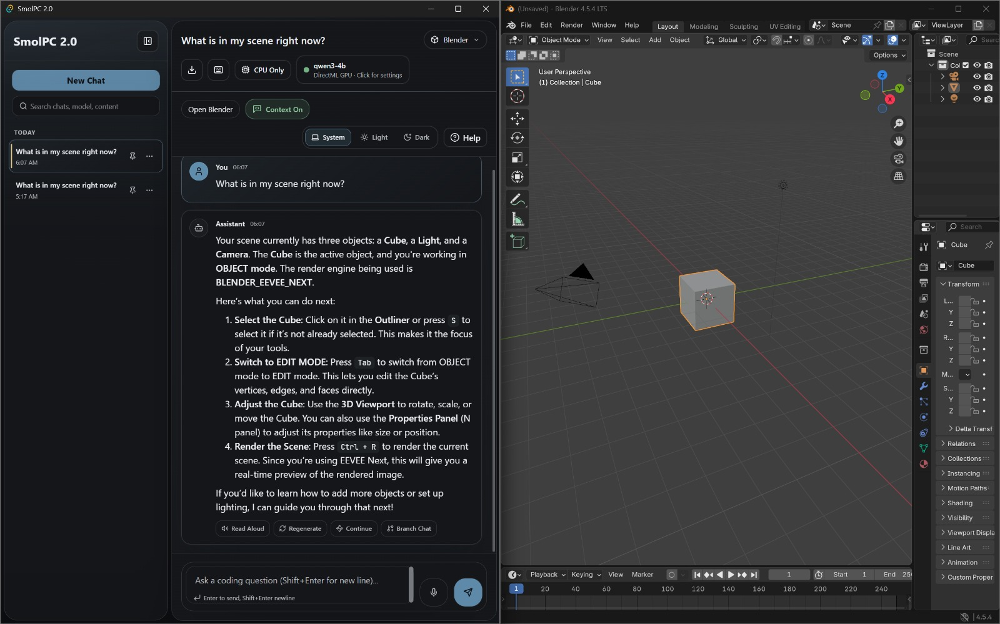

Appendices
User Manual
This manual is intended for testers and assessors using the current SmolPC 2.0 unified desktop shell. The steps below describe the user-facing flow after the application has been installed or started from source. The Deployment Manual later in this appendix covers the developer or tester setup path in more detail.
Installation
For a packaged Windows build, install SmolPC Code Helper through the provided NSIS installer or offline bundle. The installer places the application in the normal local programs area and the current packaging direction keeps shared models under %LOCALAPPDATA%\SmolPC\models\. If you are running from source for assessment or development, follow the Deployment Manual below instead of these end-user packaging steps.
Representative Screen
A packaged-build capture for this stage would show a standard Windows installer flow for SmolPC Code Helper, followed by the application appearing in the local programs list with its runtime assets stored under %LOCALAPPDATA%\SmolPC\models\.
Getting Started
On first launch, the unified shell checks local models, runtime resources, and the availability of supported host applications. If no models are available yet, the setup flow can guide the user through local provisioning from an offline bundle or a download path. Once the engine is ready, the interface transitions into the normal chat workspace.
Representative Screen
The first-launch view combines startup checks, model and runtime availability, and the transition into the shared chat workspace. This is the point where users first see whether setup is complete or whether local provisioning is still needed.
LibreOffice Assistant
Writer and Slides are accessed through the same shared shell as the other modes. They rely on the LibreOffice provider family in the backend, so setup availability and host-launch controls are part of the normal user flow. The assistant is designed for short natural-language requests such as creating headings, adding sections, or inserting slides, with the result summarised back into the same conversation.
Starting SmolPC
- Launch the SmolPC desktop application.
- Wait for the startup screen and setup checks to complete.
- If the setup banner reports a missing dependency, open the setup panel and follow the guidance before continuing.
Representative Screen
This stage is characterised by the startup loading screen, the initial unified shell, and any setup banner or availability message that appears before the first conversation begins.
General Navigation
- Use the sidebar to open or continue previous conversations.
- Use the mode selector to switch between Code, LibreOffice modes, GIMP, and Blender.
- Use the help drawer, setup panel, and status overlays if you need more information about the current mode.
- Type requests into the composer bar at the bottom of the conversation view.
Code Mode
- Select Code mode.
- Ask a coding question in plain language or paste a code snippet into the composer.
- Read the assistant response and continue the conversation if more detail is needed.
Representative Screen

Code mode inside the shared SmolPC 2.0 shell, with conversation history, runtime status, and the shared composer visible.
LibreOffice Writer and Slides
- Select Writer or Slides mode.
- Use the host-application button to open LibreOffice if required.
- Describe the task in natural language, for example adding a heading, creating a section, or inserting a slide.
- Review the assistant reply and any setup or recovery guidance if the workflow is unavailable.
Representative Screen

Writer mode in the unified shell, representing the shared LibreOffice workflow used for Writer and Slides tasks.
GIMP Assistant
- Select GIMP mode.
- Open GIMP from the host-application control if the mode is ready.
- Ask for a direct edit in plain language, such as cropping, rotating, brightening, or blurring an image.
- Check the assistant summary to confirm what action was taken.
Representative Screen

GIMP mode showing the shared assistant shell adapted to image-editing requests and host-application launch controls.
Blender Assistant
- Select Blender mode.
- Open Blender from the host-application control if the mode is ready.
- Ask a scene-aware question or request help with a modelling task, modifier, material, or object.
- Use the response as guidance for the current Blender scene and continue with narrower follow-up questions if needed.
Representative Screen

Blender mode showing scene-aware guidance in the same shared interface used by the other SmolPC 2.0 workflows.
Known User-Facing Limitations
- Some modes depend on external host applications and may be unavailable until setup is complete.
- Response quality and speed depend on the available local hardware and the active model/runtime path.
- More complex multi-step requests may work best when broken into smaller actions.
Deployment Manual
This appendix documents the current deployment picture for the project. The long-term goal is a smoother bundled local installer, but the repository already contains a concrete developer and tester setup path for the unified application.
Prerequisites
The current repo-backed setup is Windows-first and assumes a development or tester machine with the project dependencies available. The exact final end-user installer steps may be refined later once the packaging flow is fully locked down.
| Dependency | Version | Notes |
|---|---|---|
| Node.js and npm | Project workspace version | Required for workspace scripts such as npm run check and Tauri app commands. |
| Rust toolchain and Cargo | Project workspace version | Required for engine crates and the Tauri backend. |
| Tauri desktop dependencies | Current project version | Needed to run the desktop shell from source. |
| Local runtime resources | Current project version | Provisioned through the project's runtime and model setup scripts. |
| Optional host applications | Installed locally | Needed for GIMP, Blender, and LibreOffice workflows. |
Developer or Tester Setup From Source
Step 1: Clone the repository
git clone "https://github.com/SmolPC-2-0/smolpc-codehelper"
cd smolpc-codehelperStep 2: Install workspace dependencies
npm ci
cargo check --workspaceStep 3: Prepare local runtime resources
npm run runtime:setup:openvino
npm run runtime:setup:python
npm run model:setup:qwen25-instruct
npm run model:setup:qwen3-4bStep 4: Run checks
npm run check
npm run boundary:check
cargo test -p smolpc-engine-core -p smolpc-engine-client -p smolpc-engine-hostStep 5: Launch the unified app
npm run tauri:devCurrent Packaging Direction
The codebase also includes offline-bundle and Windows-local packaging scripts. These are part of the move toward a single-install local deployment path rather than requiring users to operate a separate model server manually. The documented direction is an online installer, an offline USB bundle with prebuilt model archives, and a portable-style path for more locked-down machines.
cd app
npm run package:offline
npm run package:offline:bundleLaunch The Installed Application
For development or testing from source, run the unified app from the repository root after the setup commands above have completed. For a packaged Windows build, launch the installed SmolPC Code Helper shortcut and let the startup flow finish before using a mode.
npm run tauri:devRepresentative Screen
The packaged launch view is the same unified shell described in the user manual: startup checks first, then the shared chat workspace with mode selection, setup state, and conversation controls available from a single window.
Troubleshooting
Mode Unavailable
If GIMP, Blender, Writer, or Slides is unavailable, open the setup panel and check which host application or runtime prerequisite is missing.
Runtime Or Model Problems
If inference startup fails, rerun the runtime and model setup scripts and verify that the local machine has the required runtime path available.
Host Application Issues
Host-integrated workflows depend on external application state. If a bridge-backed mode behaves unexpectedly, launch the host app first and then retry a simpler request.
Benchmark Artefacts
The performance-testing section summarises the benchmark results in report form. The raw JSON reports used for that analysis are linked here so that assessors can inspect the exact per-prompt runs, reliability counts, idle baselines, skipped combinations, and machine metadata directly.
All three reports use the same prompt corpus hash, but their run counts and warmup settings differ slightly. They should therefore be read as representative measurements gathered under the same benchmark tool and prompt set rather than as one perfectly identical hardware bake-off.
| Artefact | Machine | Coverage | Link |
|---|---|---|---|
| Benchmark report A | LAPTOP-4Q14H91S | CPU result for qwen2.5-1.5b-instruct, plus skipped entries for unavailable NPU and missing 4B assets |
Open JSON |
| Benchmark report B | codex-cpu-full-20260327 | CPU results for qwen2.5-1.5b-instruct and qwen3-4b |
Open JSON |
| Benchmark report C | vivobook-pinto | CPU, DirectML, and OpenVINO NPU results for both qwen2.5-1.5b-instruct and qwen3-4b |
Open JSON |
GDPR and Privacy of Data
SmolPC was designed as a local-first system, so privacy is one of its core architectural properties rather than an afterthought. The project minimises data transfer by keeping inference, prompts, and normal usage on the local device.
Data Collection
SmolPC 2.0 does not rely on cloud telemetry, remote prompt logging, or account-based analytics during normal use. The system stores local chats, settings, setup state, engine tokens, runtime logs, and packaged resource metadata on the device so that the application can function offline. Temporary microphone audio is processed locally for speech-to-text and is used only to generate the transcription that the user sees back in the composer.
Data Storage
Conversation history and settings are stored on the local machine. Runtime resources, model assets, tokens, and host-application integration files are also stored locally as part of the application environment. Host applications such as GIMP, Blender, and LibreOffice may also store their own local files in the normal way outside SmolPC itself.
Data Usage
Local data is used only to operate the application, preserve chat history, support setup flows, and provide assistant responses on-device. The intended purpose is functional use of the product, not user profiling or remote analytics.
Data Sharing
Under normal use, SmolPC does not send prompts, generated content, or conversation history to third-party inference providers. This is one of the main reasons the project moved away from a cloud-dependent architecture.
User Rights
Because data is stored locally, users retain direct control over their own conversations and application state on the device. Final release documentation should include clear instructions for deleting stored chat data and removing local runtime assets if required.
Offline Operation
Once runtime resources and models are present, the normal chat, tool, and voice workflows are designed to operate fully offline. This has clear privacy benefits: prompts, generated responses, and tool actions remain on the local machine instead of being routed through a third-party inference provider. The main qualification is that first-time provisioning may still use the internet if the user is not installing from the offline bundle, but this is a setup decision rather than a requirement of daily use.
Source Code License
The current repository includes an MIT License at the repository root. This permits reuse, modification, and redistribution subject to the license terms and the retention of the copyright notice and permission notice.
MIT License
The software is provided "as is", without warranty of any kind. Third-party dependencies retain their own licenses, so a final release should continue to respect the license conditions of bundled libraries and external components.
Development Blog
Development Blog
The public development blog is available at smolpc-2-0.github.io/SmolPC2.0-blog/. It turns the combined git history across the in-scope SmolPC repositories into a public-facing progress timeline covering the assessed delivery window.
Monthly Videos
Monthly progress videos documenting the team's key findings and development progress throughout the project.
| Month | Link to Google Drive | Video |
|---|---|---|
| January 2026 | Google Drive | Watch video |
| February / March 2026 | Google Drive | Watch video |